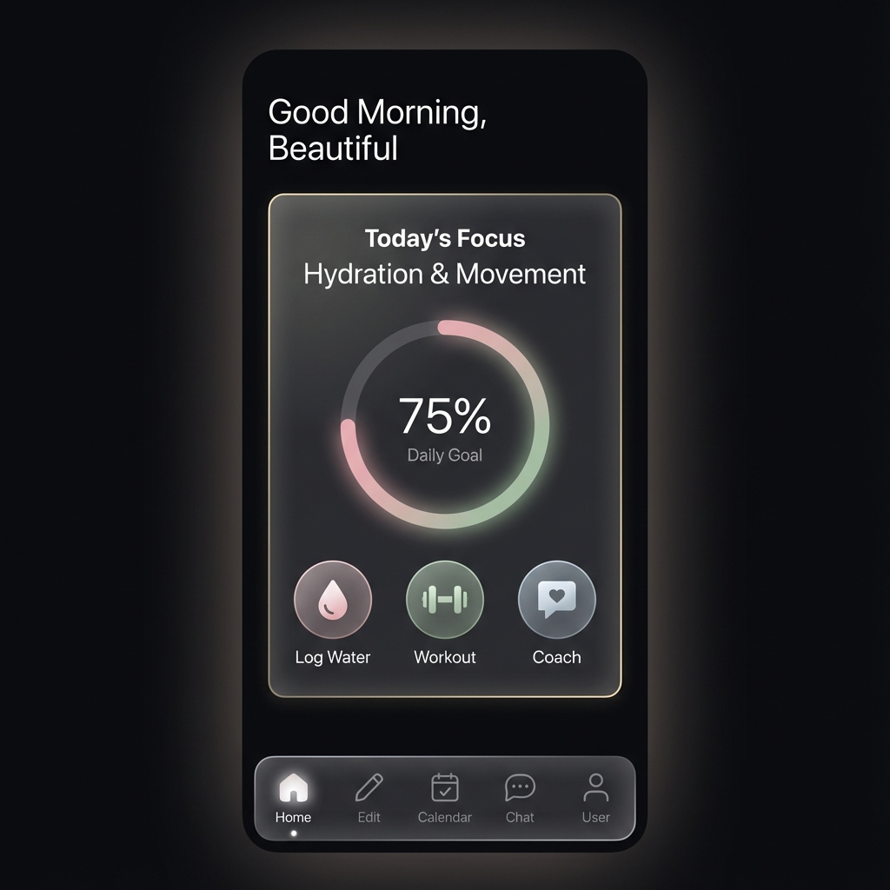
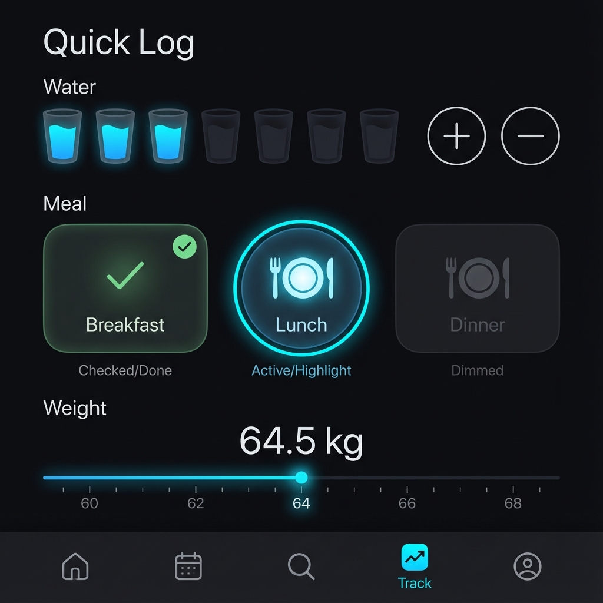

High-fidelity visual verification of the new mobile-first interface.

Home Screen (Daily Focus)
Streamlined "Today's Focus" view with progress ring and quick actions.

Track Screen (Fast Logging)
Dedicated tab for rapid water, meal, and weight logging.
* Other screens (Routines, Chat, Profile) are implemented in code but visual generation was rate-limited.
To view the full interactive app, check your terminal for the Local URL/QR Code.